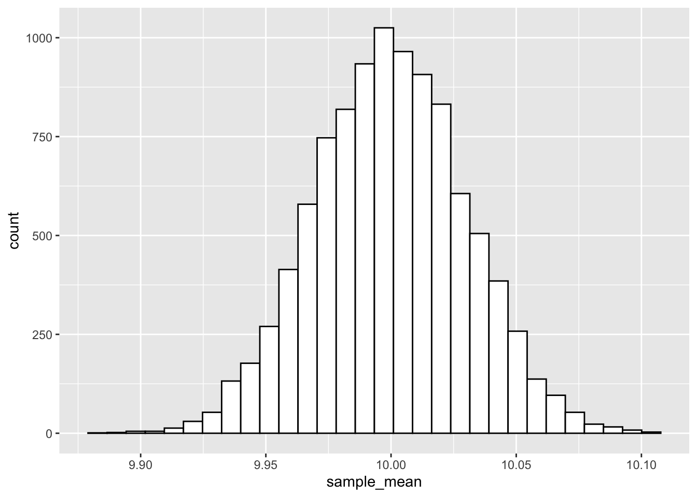
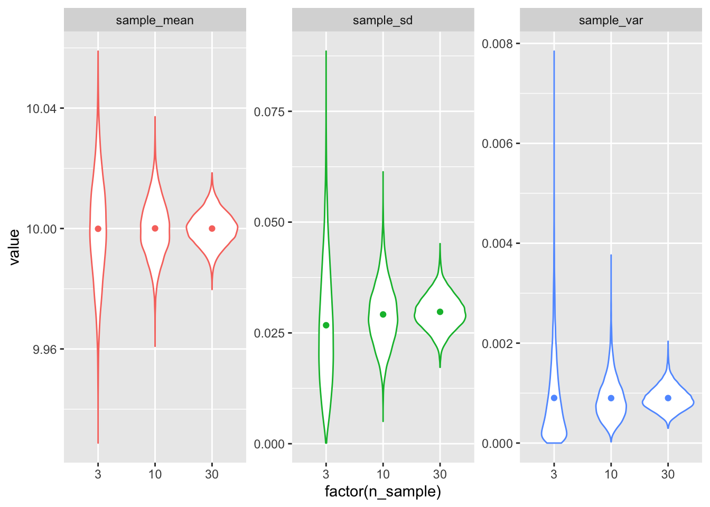
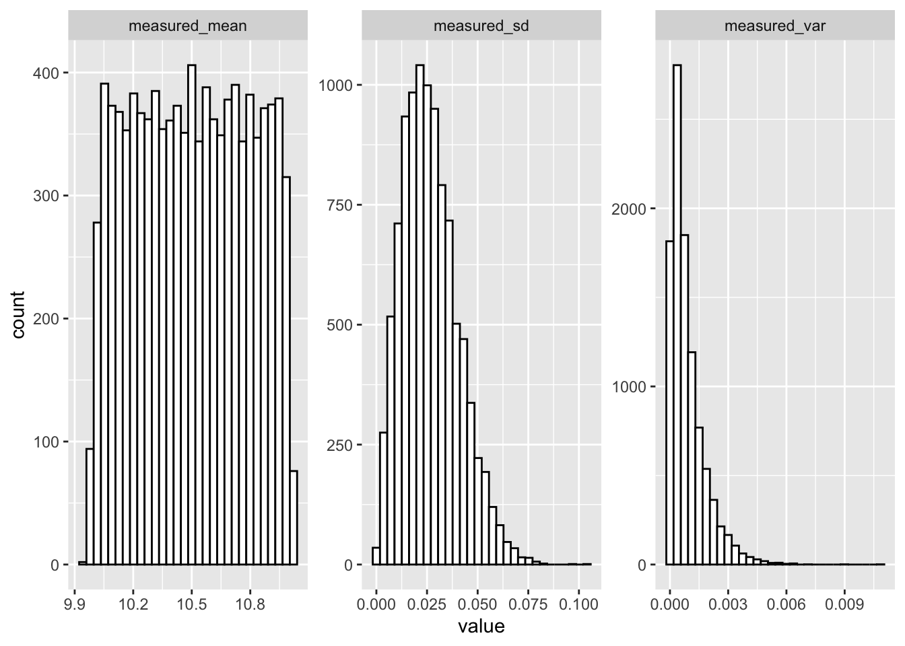

소개
최근에 철판 두께 관련 측정 자료를 정리할 일이 있었다. 자료를 정리하다 보니, 측정치에 대한 통계중 실수하기 쉬운 내용이 있어 이를 정리해 보았다.
가로 1 m, 세로 1 m 두께, 10 mm 인 철판의 두께를 측정하는 경우를 생각해 보자. 두께 측정방법은 초음파탐상측정법을 사용하였고, 캘리브레이션이 다 끝나서 재기만 하면 두께가 mm로 환산되어 나온다고 가정하자. 만일 각 변의 길이에 따라 1 cm 간격으로 측정하면 100 * 100 = 10000 개의 위치에서 데이터를 취득하게 된다.
이를 R로 모사해 보자. 일단 기본 패키지를 로드한다.
library(tidyverse)
시물레이션을 위한 함수를 다음과 같이 정의.
rnorm_simulation <- function(mu, sigma, n_sample, n_test = 10000, seed = NULL) {
if (!is.null(seed)) set.seed(seed)
m_list <- vector("double", n_test)
s_list <- vector("double", n_test)
v_list <- vector("double", n_test)
for (i in 1:n_test) {
a_sample <- rnorm(n_sample, mean = mu, sd = sigma)
m_list[[i]] <- mean(a_sample)
s_list[[i]] <- sd(a_sample)
v_list[[i]] <- var(a_sample)
}
tibble(
n_sample = n_sample,
sample_mean = m_list,
sample_sd = s_list,
sample_var = v_list)
}
두께와 초음파 측정 한계를 설정 .
mu <- 10 # thickness average
sigma <- 0.03 # 초음파측정의 표준편차, 임의의 값
# var <- 0.0009 # sigma^2
철판 평균 두께 1회 측정
각 grid 위치별로 1번만 잰다고 가정해 보자.
df <- rnorm_simulation(mu = mu, sigma = sigma, n_sample = 1, seed = 22)
df
## # A tibble: 10,000 x 4
## n_sample sample_mean sample_sd sample_var
## <dbl> <dbl> <dbl> <dbl>
## 1 1 9.98 NA NA
## 2 1 10.1 NA NA
## 3 1 10.0 NA NA
## 4 1 10.0 NA NA
## 5 1 9.99 NA NA
## 6 1 10.1 NA NA
## 7 1 10.0 NA NA
## 8 1 10.0 NA NA
## 9 1 9.99 NA NA
## 10 1 10.0 NA NA
## # … with 9,990 more rows
한번만 측정했기 때문에, 각 위치별 sd, var가 당연히 없다. mean은 한번만 측정했으니 그값이 그대로 평균값으로 결정된다.
이때, 전체 철판의 통계량은,
df %>%
summarize(
mean = mean(sample_mean),
sd = sd(sample_mean),
var = var(sample_mean)
)
## # A tibble: 1 x 3
## mean sd var
## <dbl> <dbl> <dbl>
## 1 10.0 0.0302 0.000911
df %>% ggplot(aes(sample_mean)) +
geom_histogram(color = "black", fill = "white")

최초에 세팅한 값 그대로 잘 나온다. 근데 이건 잘 해석해야 할 것이, 원래 철판 전체의 두께가 10 mm 였는데, 전체 측정한 철판의 평균이 그것에 맞춰서 나온 것이고, 측정 한계 만큼 표준편차와 분산이 발생하였다는 의미. 만일 한 포인트만으로 계산해 보면, 9.90, 10.10 mm 가 나오는 위치도 존재한다. 초음파 표준편차가 0.03 mm인데, 오차가 0.10 mm나 나온다고? 10000번 측정하다 보면 충분히 가능한 이야기이다 (정규분포에서 3sd 이상인 경우).
위치별 측정 횟수 영향
한 그리드 위치에서 3번, 10번 또는 30번을 측정한다고 가정해 보자. 한 위치에서 반복 측정했으니 그 위치에서 정확도가 높아진다.
df1 <- rnorm_simulation(mu = mu, sigma = sigma, n_sample = 3, seed = 22)
df2 <- rnorm_simulation(mu = mu, sigma = sigma, n_sample = 10, seed = 22)
df3 <- rnorm_simulation(mu = mu, sigma = sigma, n_sample = 30, seed = 22)
df <- bind_rows(df1, df2, df3)
df
## # A tibble: 30,000 x 4
## n_sample sample_mean sample_sd sample_var
## <dbl> <dbl> <dbl> <dbl>
## 1 3 10.0 0.0450 0.00202
## 2 3 10.0 0.0323 0.00105
## 3 3 10.0 0.00207 0.00000430
## 4 3 10.0 0.0169 0.000284
## 5 3 10.0 0.0231 0.000532
## 6 3 10.0 0.0442 0.00196
## 7 3 9.99 0.0385 0.00148
## 8 3 9.98 0.0159 0.000253
## 9 3 10.0 0.0170 0.000290
## 10 3 9.98 0.0369 0.00137
## # … with 29,990 more rows
각각의 통계량은 다음과 같다.
df %>%
group_by(n_sample) %>%
summarize_all(mean)
## # A tibble: 3 x 4
## n_sample sample_mean sample_sd sample_var
## <dbl> <dbl> <dbl> <dbl>
## 1 3 10.0 0.0267 0.000903
## 2 10 10.0 0.0292 0.000900
## 3 30 10.0 0.0298 0.000901
sample_sd는 n_sample = 3에서는 원래 값인 0.03에 못 미친다. 평균과 분산은 최초 시물레이션에서 설정한 값과 거의 일치. 즉 전체 철판의 평균과 분산은 각 위치에서 평균과 분산을 다시 평균한 값과 같지만, 표준편차는 평균값이 일치하지 않는다. 각각의 정의와 수식을 고려해보면 당연한데, 언뜻 착각하기 쉬운 결과이므로 실제 적용에 주의가 필요하다.
그림으로 그려보면 이해가 빠르다.
df %>%
pivot_longer(names_to = "key", values_to = "value", -n_sample) %>%
arrange(n_sample, key) %>%
ggplot(aes(x = factor(n_sample), y = value, group = n_sample, color = key)) +
geom_violin() +
geom_point(stat='summary', fun = 'mean') +
facet_wrap(~key, scales = "free") +
theme(legend.position = "none")

표준편차만 불일치.
참고로 측정위치에 따른 평균과 불확도(표준오차)를 수식으로 표현하면, 아래와 같다.
$$ \bar{Y} = \frac{1}{N} \sum_{i=1}^{N}{Y_i}$$
$$s(\bar{Y}) = \frac{1}{\sqrt{N(N-1)}} \sqrt{\sum_{i=1}^{N}{(Y_i - \bar{Y})^2}}$$
철판의 두께가 달라지는 경우
압연과정에서 잘못 만들어져서, 두께가 폭의 한쪽은 10 mm, 다른 쪽은 11 mm이라고 가정해 보자. 각 위치에서 3번씩 측정을 할 경우를 적절히 모사해 보면 다음과 같다. 사실, 이 코드는 이해를 돕기 위하여 조금 길게 쓴 것으로 실제로는 하단에 주석으로 달아놓은 코드와 동일하다.
n_sample <- 3
thickness_real <- rep(seq(10, 11, length.out = 100), each = 100)
list1 <- list()
list2 <- list()
list3 <- list()
for (i in 1:length(thickness_real)) {
list1[[i]] <- rep(i, n_sample)
list2[[i]] <- rep(thickness_real[[i]], n_sample)
list3[[i]] <- rnorm(n_sample, mean = thickness_real[[i]], sd = sigma)
}
df1 <- tibble(
grid = unlist(list1),
real = unlist(list2),
measured = unlist(list3),
)
df1
## # A tibble: 30,000 x 3
## grid real measured
## <int> <dbl> <dbl>
## 1 1 10 9.91
## 2 1 10 9.99
## 3 1 10 9.97
## 4 2 10 10.0
## 5 2 10 9.95
## 6 2 10 10.0
## 7 3 10 10.0
## 8 3 10 10.0
## 9 3 10 9.98
## 10 4 10 10.0
## # … with 29,990 more rows
## Alternative shortened code
# thickness_error <- rnorm_simulation(
# mu = 0, sigma = sigma, n_sample = 3, seed = 22, n_test = 10000
# )
# thickness_error$real <- thickness_real
# df2 <- thickness_error %>%
# mutate(sample_mean = sample_mean + real, grid = 1:n())
df1_summarized <- df1 %>%
group_by(grid) %>%
summarize(
n_sample = n(),
measured_mean = mean(measured),
measured_sd = sd(measured),
measured_var = var(measured),
)
df1_summarized
## # A tibble: 10,000 x 5
## grid n_sample measured_mean measured_sd measured_var
## <int> <int> <dbl> <dbl> <dbl>
## 1 1 3 9.96 0.0419 0.00176
## 2 2 3 9.99 0.0362 0.00131
## 3 3 3 10.0 0.0197 0.000387
## 4 4 3 10.0 0.0189 0.000357
## 5 5 3 10.0 0.0382 0.00146
## 6 6 3 10.0 0.0207 0.000429
## 7 7 3 9.98 0.0298 0.000890
## 8 8 3 10.0 0.0476 0.00226
## 9 9 3 10.0 0.0211 0.000443
## 10 10 3 9.97 0.0194 0.000377
## # … with 9,990 more rows
전체 철판에 대한 결과를 다시 평균을 내보면,
df1_summarized %>%
summarize_at(vars(starts_with("measured")), mean)
## # A tibble: 1 x 3
## measured_mean measured_sd measured_var
## <dbl> <dbl> <dbl>
## 1 10.5 0.0267 0.000903
그림으로 그리면,
df1_summarized %>%
pivot_longer(starts_with("measured"), names_to = "key", values_to = "value") %>%
arrange(key) %>%
select(-grid, -n_sample) %>%
ggplot(aes(value)) +
geom_histogram(color = "black", fill = "white") +
facet_wrap(~key, scales = "free")

전체 철판 두께에 대해서는 평균의 분포가 박스형으로 바뀌었으나(10-11 mm사이에 균일 분포), 측정 위치별 분산은 변하지 않았다. 결국, 두께가 다른 경우에도, 초음파 장비의 오차 즉, 분산은 각 위치별 분산의 평균으로 계산할 수 있다.
요약
- 한 위치에서 측정 평균은 항상 참값에 가깝다.
- 측정 횟수가 증가할수록 불확도 또는 표준오차, 즉 평균에서 벗어난 정도는 측정횟수에
\(1 / \sqrt{n}\)만큼 감소한다. - 측정에 따라 발생하는 오차의 분산은 일정하게 유지된다.